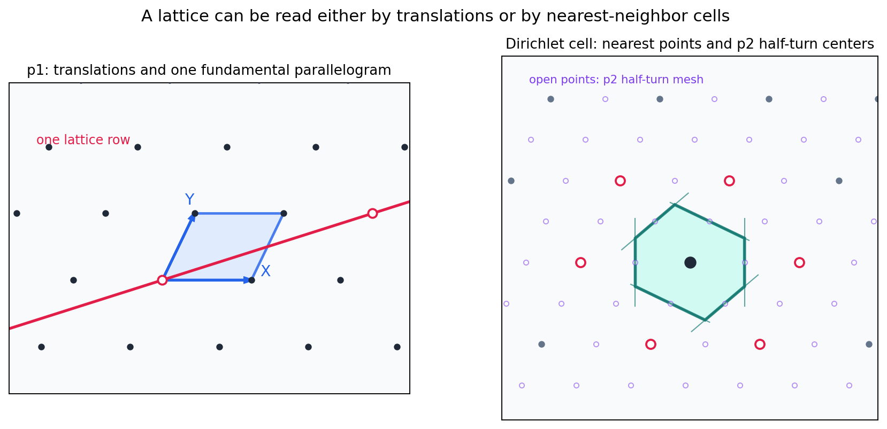
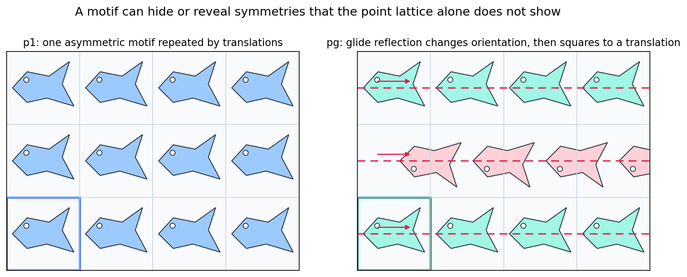
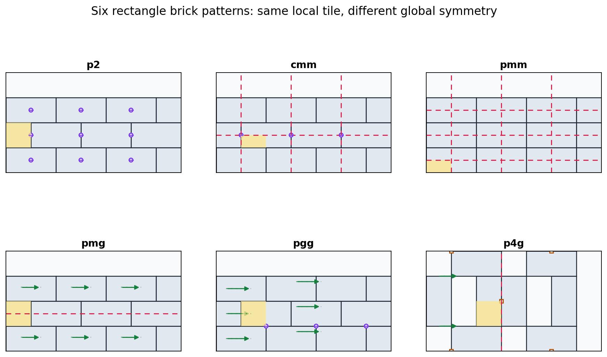
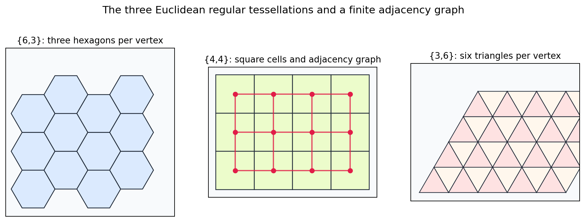
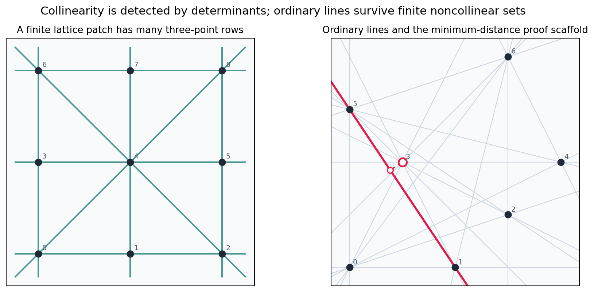

Source Span
Printed pages 50-66; PDF pages 68-84.
Starting Point
Two independent translations generate the lattice.
Chapter Constraint
Only rotation orders \(2,3,4,6\) survive in a planar lattice.

A planar pattern is a lattice, a cell geometry, a motif, and a set of symmetry constraints all at once.
Printed pages 50-66; PDF pages 68-84.
Two independent translations generate the lattice.
Only rotation orders \(2,3,4,6\) survive in a planar lattice.

Translation basis and determinant area.
Nearest-neighbor fundamental region.
Translations, glides, and synthetic asymmetric tiles.
Six rectangle arrangements with different global symmetries.
Allowed lattice rotation orders are \(2,3,4,6\).
Regular tilings, adjacency graphs, and ordinary lines.
$$iX+jY,\qquad i,j\in\mathbb Z$$
0.0
Dirichlet area equals determinant area.
6
The oblique Dirichlet cell has six nearest neighbors.
Repeats the same asymmetric motif without changing handedness.
Reflects the motif across an axis and shifts by half a tile.
0.0
The check records glide squared as a full translation.


2:1
Every schematic uses the same local rectangle geometry.
6
The comparison table records six brick groups.
Dashed mirrors, half-turn dots, glides, and quarter-turn markers show what survives.
$$\operatorname{tr}(R)=2\cos(2\pi/n)\in\mathbb Z$$
2, 3, 4, 6
Trace \((-1+\sqrt5)/2\) is not an integer.

$$(p-2)(q-2)=4$$
{6,3}, {4,4}, {3,6}
{6,3} and {3,6} swap; {4,4} is self-dual.
determinant of rows \((x_i,y_i,1)\) vanishes exactly on a line
19
Total pair-lines in the sampled finite set.
18
Lines containing exactly two sampled points.

\(X=(1,0)\), \(Y=(\cos\theta,\sin\theta)\).
6, 6, 6, 4
The square case appears at \(90^\circ\).
The Dirichlet cell area matches the determinant area through the sweep.
Two translations determine points and determinant area.
Nearest-neighbor cells give canonical fundamental regions.
Glides and mirrors change the wallpaper group.
Integer trace allows only \(2,3,4,6\).
The angle equation leaves three Euclidean regular tilings.
Finite noncollinear point sets retain two-point lines.